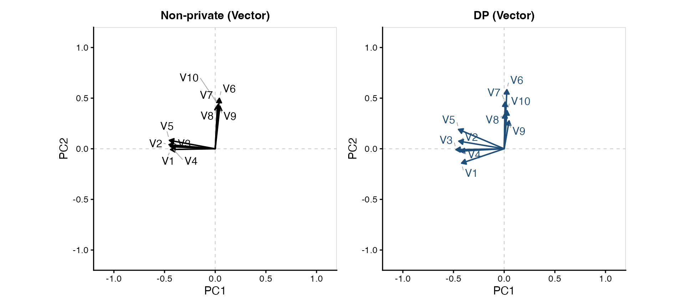
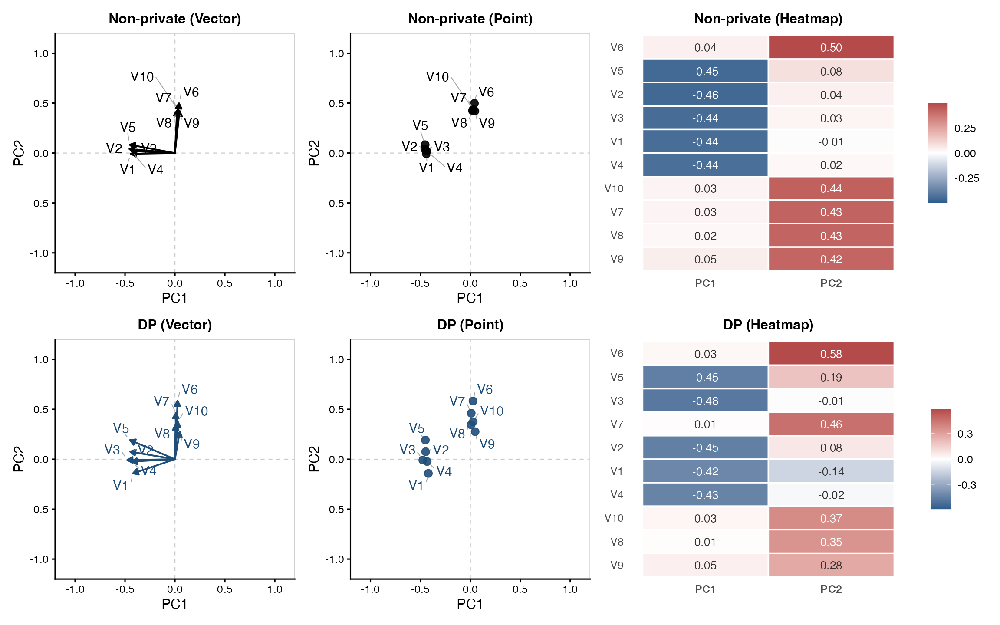
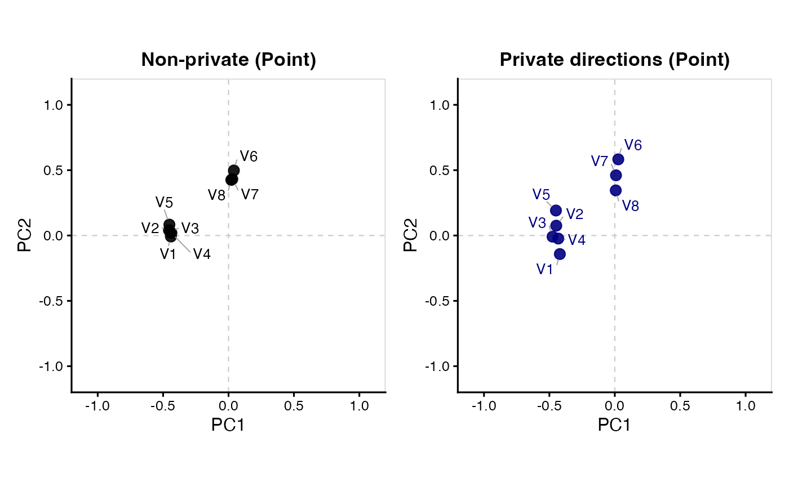

This tutorial explains how to estimate private principal component
(PC) directions with dp_loading(), inspect the fitted
results, and create vector, point, and heatmap plots with
plot(). It covers R arguments, examples, and
visualization, including optional ordinary PCA comparisons.
Here, loading means a coefficient of a unit-length PC direction vector. Rows of the direction matrix represent variables and columns represent PCs and loading plots visualize variables. For the spherical Kendall construction, Gaussian mechanism, and interpretation of the coefficients, see DP Directions Methodology. For installation, input requirements, example datasets, and general budget allocation, see Getting Started.
1. Load the example data
We use gau, a synthetic dataset with 1,000 observations
and 20 numeric variables. For more details, see the documentation for gau.
2. Set the privacy budget and estimate PC directions
For dp_loading(), the entire privacy budget is allocated
to private direction estimation, so no split argument is
needed.
loading_privacy <- privacy_control(
eps = 3,
delta = 1e-4
)Now, estimate the private directions. We set
non_private = TRUE to include ordinary PCA directions for
comparison.
set.seed(123)
loading_fit <- dp_loading(
X,
privacy = loading_privacy,
non_private = TRUE
)
loading_fit
#> Differentially Private PC Directions
#> Data: 1000 observations x 20 variables
#> Components: 20 PC directions
#> Total privacy budget: eps = 3 ; delta = 1e-04
#> Non-private reference: includedThe main arguments of dp_loading() are:
| Argument | Description |
|---|---|
X |
Numeric input matrix or data frame; rows are observations and columns are variables. |
privacy |
The loading budget from privacy_control();
when only the total eps and delta are given,
the full budget is used by dp_loading(). |
cpp.option |
Use the compiled direction estimator
(TRUE, the default), or the R implementation
(FALSE). |
non_private |
Compute ordinary PCA directions for comparison when
TRUE (default: FALSE). |
The optional non-private reference is computed from the sample covariance matrix and is not a differentially private output.
3. Inspect the result
The fitted object stores private directions at the top
level, an optional ordinary PCA reference under
nonprivate, and input dimensions and privacy settings under
metadata:
| Result | Description |
|---|---|
loading_fit$directions |
Private PC direction coefficients (a p by
p matrix). |
loading_fit$nonprivate |
Ordinary PCA direction coefficients, or
NULL if not requested. |
loading_fit$metadata$n,
$p
|
Number of observations and numeric variables. |
loading_fit$metadata$privacy |
Privacy parameters used for private direction estimation. |
For this dataset, each direction matrix has 20 rows (variables) and 20 columns (PCs). Each coefficient indicates the weight of a variable in a particular PC direction.
dim(loading_fit$directions)
#> [1] 20 20
round(loading_fit$directions[1:6, 1:3, drop = FALSE], 3)
#> PC1 PC2 PC3
#> V1 -0.420 -0.142 -0.055
#> V2 -0.448 0.075 -0.155
#> V3 -0.476 -0.009 0.102
#> V4 -0.432 -0.023 0.212
#> V5 -0.450 0.191 -0.063
#> V6 0.027 0.583 0.371The summary() function reports the estimated directions
and the privacy settings without rerunning the estimator. Its returned
summary object retains the direction matrices under
directions and nonprivate:
summary(loading_fit)
#> DP PC Directions Summary
#> Data: 1000 observations x 20 variables
#> Components: 20 PC directions
#>
#> Private PC directions (first 6 variables x first 4 PCs):
#> PC1 PC2 PC3 PC4
#> V1 -0.4200 -0.14198 -0.0549 0.2245
#> V2 -0.4475 0.07532 -0.1552 -0.2335
#> V3 -0.4757 -0.00875 0.1022 -0.0361
#> V4 -0.4321 -0.02322 0.2124 0.0591
#> V5 -0.4500 0.19129 -0.0628 -0.0116
#> V6 0.0267 0.58292 0.3706 0.2886
#>
#> Non-private PC directions (first 6 variables x first 4 PCs):
#> PC1 PC2 PC3 PC4
#> V1 -0.4403 -0.00758 -0.0684 0.2466
#> V2 -0.4554 0.04056 0.1534 -0.1527
#> V3 -0.4443 0.02665 0.0218 -0.3505
#> V4 -0.4367 0.01992 -0.1261 0.0381
#> V5 -0.4521 0.08331 0.0298 0.2080
#> V6 0.0408 0.49751 -0.4353 0.0211
#>
#> Total privacy budget: eps = 3 ; delta = 1e-04
#> Non-private reference: included
#> Full direction matrices are available in $directions and $nonprivate.4. Plot the result
The plot() method for a dp_loading object
provides three display types: "vector",
"point", and "heatmap".
| Plot type | What it shows |
|---|---|
"vector" |
Each variable as an arrow from the origin to its coefficients on two selected PCs. |
"point" |
The same pair of PC coefficients shown as a point instead of an arrow. |
"heatmap" |
Signed direction coefficients for selected variables across one or more PCs. |
4.1. Vector plot
A vector plot displays each variable using its coefficients on the two selected PC axes. For example, a variable with coefficients (v_{j1}, v_{j2}) appears as an arrow from (0,0) to (v_{j1}, v_{j2}). The arrows represent variables with their lengths reflecting the magnitudes of the selected direction coefficients.
vector_plot <- plot(
loading_fit,
type = "vector"
)
By default, the plot displays PC1 and PC2, selecting the ten
variables with the largest coefficient norms. Since
non_private = TRUE was used when fitting, the non-private
reference appears on the left and the private result on the right.
4.2. Point and heatmap plots
A point plot displays the same coefficient pairs without arrows. A heatmap shows the sign and magnitude of the coefficients across selected PCs.
To display all three plot types together, simply omit
type:
loading_plots <- plot(loading_fit)
By default, all three plot types display PC1 and PC2. When multiple types are selected, the non-private plots appear in the top row and the private plots in the bottom row.
In the heatmaps, negative coefficients are shown in blue and positive coefficients in red by default. Each private and non-private heatmap uses its own symmetric color scale, so comparisons should be based on the displayed values or colorbars rather than on color intensity alone.
The displayed PCs and variables can be customized using
axes, heatmap_components, and
variables, as described in the next section.
5. Select PCs and variables
The plot() method provides three arguments for selecting
which PCs and variables to display:
| Argument | Description |
|---|---|
axes |
Selects the two PCs displayed in vector and point plots
(default: c(1, 2)). |
heatmap_components |
Selects the PCs displayed in heatmaps (default:
NULL, which uses the PCs specified by
axes). |
variables |
Selects the variables displayed in each plot (default:
10). |
For example, the following code displays PC1 and PC3 in the vector plot and PC1 through PC4 in the heatmap, using the first eight variables:
plot(
loading_fit,
type = c("vector", "heatmap"),
axes = c(1, 3),
heatmap_components = 1:4,
variables = 1:8 # Alternatively, select by name using paste0("V", 1:8)
)The variables argument supports several ways to select
variables:
| Example | Selection |
|---|---|
variables = 6 |
Selects the six variables with the largest coefficient
norms across the displayed PCs (default:
variables = 10). |
variables = "all" |
All variables. |
variables = c("V1", "V3", "V5") |
Variables selected by name. |
variables = c(1, 3, 5) |
Variables selected by column position. |
When a single number is specified (e.g., variables = 6),
variables are selected based on the magnitudes of their coefficients
across the PCs displayed in each plot. Thus, vector and point plots
select the same variables, while heatmaps may select different variables
depending on heatmap_components. Variable selection is
performed separately for private and non-private results. To display the
same variables across all plots, specify their names or column positions
explicitly.
6. Customize the appearance
Use loading_plot_control() to change colors, text sizes,
and heatmap appearance. Specify plot type, PC axes, and variable
selection directly in plot().
custom_plot <- plot(
loading_fit,
type = "point",
axes = c(1, 2),
variables = 1:8,
plot_control = loading_plot_control(
nonprivate_color = "black",
private_color = "navy",
point_size = 3,
label_size = 3.5,
base_size = 12,
title_size = 13,
private_title = "Private directions"
)
)
| Option | Purpose |
|---|---|
nonprivate_color,
private_color
|
Colors used for ordinary and private vectors or points. |
arrow_size, point_size,
label_size
|
Sizes of arrows, points, and variable labels. |
heatmap_values,
heatmap_digits, heatmap_text_size
|
Display and formatting of coefficient labels inside heatmap cells. |
heatmap_colors |
Negative and positive heatmap colors, supplied as
c(low = ..., high = ...). |
base_size, title_size
|
General text and title sizes. |
nonprivate_title,
private_title
|
Titles of the ordinary and private panels. |
xlab, ylab
|
Axis labels for vector and point plots. |
For complete argument descriptions, see ?dp_loading,
?plot.dp_loading, and
?loading_plot_control.
Previous: Getting Started
Next: DP Scree
Plot
Tutorial overview: Choose a
starting point